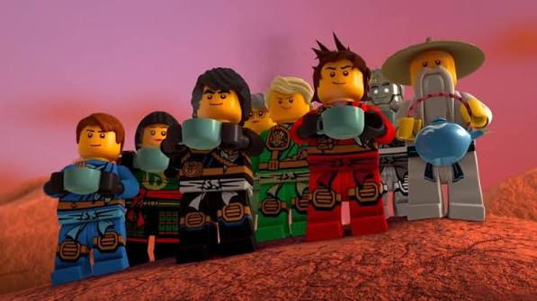
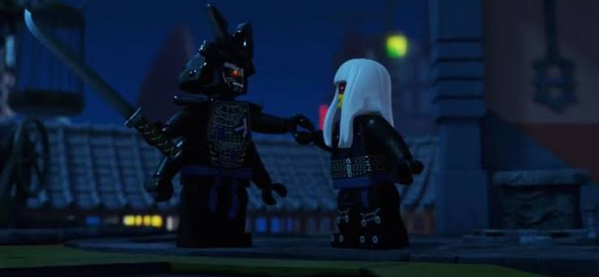

Ninjago
Welcome to Ninjago

introduction
Ninjago is a world where ancient traditions, elemental powers, and modern cities come together. Protected by the Ninja, this realm has faced powerful enemies and countless challenges throughout history. From mastering Spinjitzu to defending the balance between good and evil, the Ninja continue to grow stronger together.

The Protectors
The Protectors of Ninjago are the legendary Ninja team who have defended the realm for years. Led by Lloyd, the Green Ninja, the team of Kai, Jay, Cole, Zane, and Nya use their elemental powers and mastery of Spinjitzu to face dangerous enemies and protect the balance of Ninjago.

The Villains
Throughout their journey, the Ninja have faced many powerful enemies who have threatened the balance of Ninjago. From Garmadon's dark ambitions and the Overlord's quest for power to the schemes of villains like Lord Ras and Chen, each challenge has tested the Ninja's strength and determination. These battles have shaped the heroes and made their victories even more meaningful.
Ninjago Lore

The story of Ninjago begins with the First Spinjitzu Master, a legendary warrior who created the realm using the powerful forces of Creation and Destruction. With the help of the four Golden Weapons of Spinjitzu, he brought balance to the world and passed down his teachings to future generations. From his legacy, the power of the elements was born, giving certain warriors the ability to control forces such as Fire, Ice, Lightning, Earth, Water, and Energy. For centuries, Ninjago has been shaped by the conflict between light and darkness. Ancient forces like the Oni and Dragons played a major role in the balance of the realm, while powerful enemies constantly challenged its peace. Guided by the teachings of Spinjitzu, the Ninja continue the legacy of the First Spinjitzu Master, protecting Ninjago and keeping the balance between creation and destruction.
Throughout history, Ninjago has gone through many eras filled with legendary battles and unforgettable heroes. The Ninja have faced powerful enemies such as the Overlord, the Serpentine tribes, the Ghosts, and many others who sought to bring chaos to the realm. Each battle tested their courage, but also strengthened their bond as a team. As new generations rise, the legacy of Spinjitzu continues to live on, reminding everyone that balance, unity, and determination are the true strengths of Ninjago.